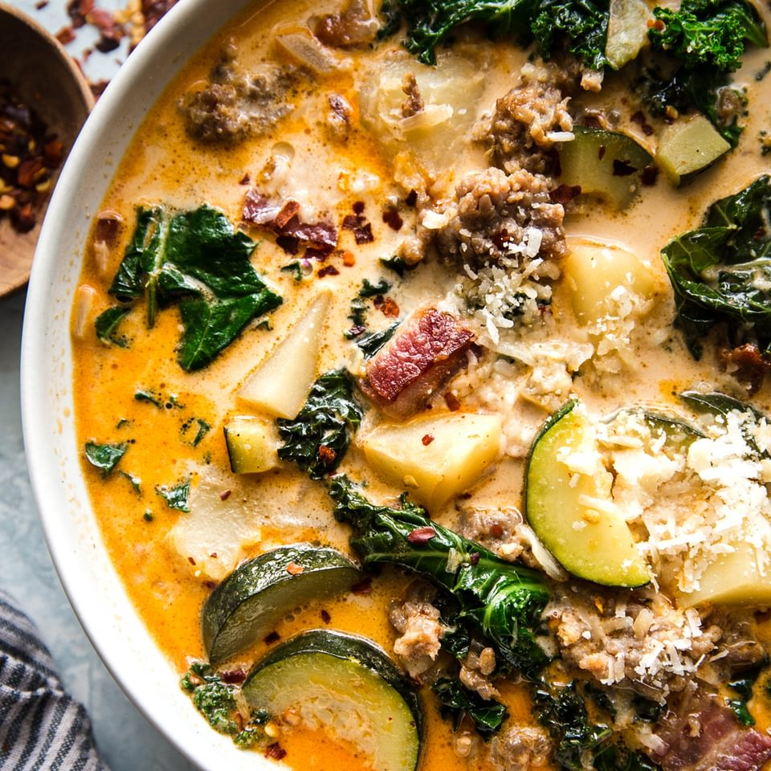

It is an easy one pot soup which mainly consists of Italian Sausage, Kale, heavy cream, chicken stock, and potatoes. Often times people will add crispy bacon at the end for more texture, or use spicy italian sausage and add red pepper flakes for a little kick.
Ingredients
- 6oz bacon, chopped
- 1lb Italian Sausage (Spicy Italian Sausage recommended)
- 1 Medium head garlic (10 large cloves) peeled and minced
- 1 medium onion diced
- 6 cups chicken stock/broth
- 4 cups water
- 5 medium russet potatoes, peeled and chopped to 1/4" pieces
- 1 kale bundle, leaves stripped and chopped
- 1 cup whipping cream
- salt and black pepper
- Parmesan cheese
Steps
- In a large pot or dutch oven (5.5 qt), over medium-high heat, add chopped bacon and sauté until browned (5-7 mins). Remove bacon to a paper-towel lined plate and spoon out excess oil, leaving about 1 Tbsp oil in the pot.
- Add Italian sausage, breaking it up with your spatula and sauté until cooked through (5 min). Remove to paper towel lined plate.
- Finely dice onion and add to the pot. Saute 5 min or until soft and golden then add minced garlic and saute 1 min.
- Add 6 cups broth and 4 cups water, and bring to boil. Add sliced potatoes and cook 13-14 min or until easily pierced with a fork.
- When potatoes nearly done, add chopped kale and cooked sausage and bring everything to a light boil.
- Stir in 1 cup cream and bring to boil. Season to taste with salt and black pepper then remove from heat. Garnish with bacon and grated parmesan.